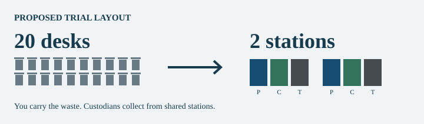

Shared Recycling Stations at UR
An office trial to compare shared trash and recycling stations with deskside pickup.
A proposed office trial, not an approved UR policy or an official election.
Ballot
Should UR test shared trash and recycling stations in one 20-person SMD office area for 12 weeks? After four weeks of measuring current service, deskside pickup would stop for eight weeks. Two shared stations would keep trash, paper, and containers separate. UR would spend at most $500, provide access accommodations, and publish costs, walking time, and recycling results before any expansion. Labs and clinics are excluded.
Proposal
Office workers would carry their waste to a shared station instead of having each desk bin emptied. The goal is fewer bin liners and less recycling ruined by food, liquids, or wrong items. Each station would keep the required recycling separate, with three bins: trash, paper/cardboard, and accepted containers. UR pays up to $500 for setup and checks from its facilities budget. Suitable bins would be reused. Office workers lose a convenience and some time. Custodians could spend freed time cleaning other areas. A fixed contract may mean no cash savings. The trial covers 20 people, not the whole campus. Its costs and gains must include everyone's time, not just the bill for trash pickup.

Case for YES
A recycling bin is not much help if its contents end up in a landfill. In December 2025, UR said most material in SMD's plastic, metal, and glass recycling stream had been landfilled because it was contaminated. That report does not tell us today's rate. Shared stations put the choices in one place and remove many small pickup stops. Other universities already use them. UCSF reported contamination falling from 43% to 32% in one pilot. That is a reason to try this, not a promise. I think giving up deskside pickup is worth testing if it cuts wasted bags and helps more material get recycled.
Sources: UR's December 2025 report, UCSF's pilot, and Maryland's office system.
Case for NO
This could just move work from custodians to everyone else. Twenty small trips can take more time than one collection route. People might leave waste at their desks, use the wrong bin, or fill nearby bins instead. More waste in fewer places could also mean spills and extra cleaning. The sorting problem might happen at the loading dock or after collection, where moving office bins would not fix it. UCSF's result was an observed change, not proof that bin placement alone caused it. UR could pay for the trial and lose time without recycling more. Keeping convenient bins and fixing handling errors may be better.
Weaknesses
The weakest assumption is that the walk replaces a trip people already take. If each of 20 people makes one extra 45-second trip daily, that adds 15 minutes a day. Custodial savings must be compared with that. We do not have a UR bin count, current sorting audit, or service quote for the selected office. SMD's 2025 failure does not prove desk bins caused it or that the problem still exists. Two stations and $500 are proposed limits, not a surveyed layout or a price quote.
Barriers
It is already happening elsewhere, so this needs no new invention. At UR, the people who would lose desk pickup are not the same people who collect the bins or pay the waste bill. A department may resist a visible inconvenience for a benefit it cannot see. A fixed service contract might leave UR paying the same amount after the change. Shared stations also need space, safe access, and agreement about who handles spills. UR's 2025 report shows another problem: positive recycling updates were sent before staff learned that loads were being landfilled. Better bin counts are not enough; UR needs evidence about what happens after collection. These are possible barriers, not confirmed reasons UR has rejected this idea.
Source: UR Sustainability.
Trial details
Trial setup
Facilities and SMD Environmental Services would select one non-lab office area serving 20 people in the School of Medicine and Dentistry for a spring 2027 trial. They would first confirm that it has deskside pickup and space for two shared stations on an accessible route. No room number or existing bin count has been verified. If the layout cannot work safely, do not begin there.
The first four weeks measure existing service. The next eight weeks replace routine deskside trash and recycling pickup with two shared stations. This changes collection inside the office, not the truck route or the legal duty to recycle. Office users may keep a small container, but must empty it themselves, except where an accommodation is needed.
Waste sorting
Each station has trash, paper/cardboard, and accepted-container recycling. Follow UR's current sorting rules. Keep any existing food-scrap collection, confidential-paper service, and specialty-waste handling. Labs, clinics, patient areas, restrooms, and food-service operations are outside this trial. Never put medical waste, batteries, electronics, or hazardous materials into these stations.
Operations
Environmental Services checks the stations each workday and empties them as needed. Reuse suitable bins and keep walkways and exits clear. Keep deskside help for anyone needing an access accommodation; do not require people to disclose a disability to the class. Store removed university bins for reuse or return.
The proposed $500 ceiling covers extra setup and checking costs, including any extra paid staff time. It is a spending limit, not a supplier quote. Routine paid time is still recorded as an economic cost. If a safe trial needs more than $500, obtain a revised approved budget before starting. Freed custodial time goes to other cleaning; it is not automatically a payroll saving.
Evaluation
Compare baseline and trial per occupied office day, not just raw totals. Record liner count and weight, all custodial collection/cleaning/checking time, actual spending, workers' extra walking time, spills, missed collections, and access complaints. Ask trained staff to sample contamination by weight in both recycling and trash; do not ask office workers or students to handle unsafe waste.
Request the hauler's acceptance/rejection records and downstream destination information. Material put in a blue bin is not automatically recycled. If office-level recovery cannot be tracked after loads are mixed, say so; report cleaner sorting separately from actual downstream recovery. Include recyclable material mistakenly thrown away.
Stop or repair unsafe access, pests, or repeated overflow promptly. At week 12, report what changed and the uncertainty. Do not expand solely because fewer bins were collected. Expansion needs a credible environmental gain and a case that it is worth the full cost, including office workers' time. If the evidence does not support it, restore the old service.
Time costs
Illustrative assumptions only: 20 desks take 30 seconds each to service, while each of two shared stations takes 90 seconds. That is 10 minutes minus 3 minutes, or 7 custodial minutes saved per workday. Actual service frequency, spills, accommodations, and audits could change this completely.
| Added walking per person daily | Added time for 20 people | Net daily time saved |
|---|---|---|
| No extra trip | 0 minutes | 7 minutes |
| 15 seconds | 5 minutes | 2 minutes |
| 45 seconds | 15 minutes | -8 minutes (a loss) |
If every person's time is valued at an assumed $30 per hour, those cases equal $3.50, $1.00, and -$4.00 per workday. Over 40 fully occupied workdays, that is $140, $40, or -$160 before setup costs. These are not measured savings, wages, or a forecast. Different values of time change the result. Bag and disposal costs and environmental effects must be added separately without double counting.
The 45-second case is the awkward part of the deal: central collection can save custodial time while wasting more time overall. The trial may cost more than it saves, especially at this small scale. Fewer bags and more recovered material would have to justify the remaining cost; no carbon or cash benefit is promised.
Sources
- UR: Calling all at SMD to help keep recycling clean
December 15, 2025. A report about SMD's academic and research recycling pilot, not all UR waste. It reported contamination in the container stream, while clean cardboard recycling was succeeding. It does not establish the current rejection rate or locate the source of contamination.
- UCSF: Centralized Bin Locations: A Waste Success Story
November 26, 2024. One pilot reported contamination changing from 43% to 32% after individual bins were removed: 11 percentage points, not 11 percent. The report does not establish a controlled causal effect or predict UR's outcome.
- University of Maryland, Baltimore: Self-Service Waste Initiative
March 28, 2023. Documents an existing office system with separate shared bins for trash, paper/cardboard, and plastic/metal/glass. This supports practical feasibility, not a claim about UR's savings.
- Monroe County: Business Recycling
The county describes recycling requirements for institutions, including cardboard, office paper, and specified food-service containers. This proposal changes collection locations, not the duty to recycle. Facilities must check the final layout and service plan.
- UR: What to Recycle
Current campus sorting guidance. Accepted materials must stay separated and clean. Batteries, electronics, hazardous waste, confidential paper, and clinical waste retain their existing separate handling routes.
- UR: Where to Recycle
Describes public-space and deskside recycling and separate paper/cardboard and container bins. It is not an inventory of a particular 20-person office.